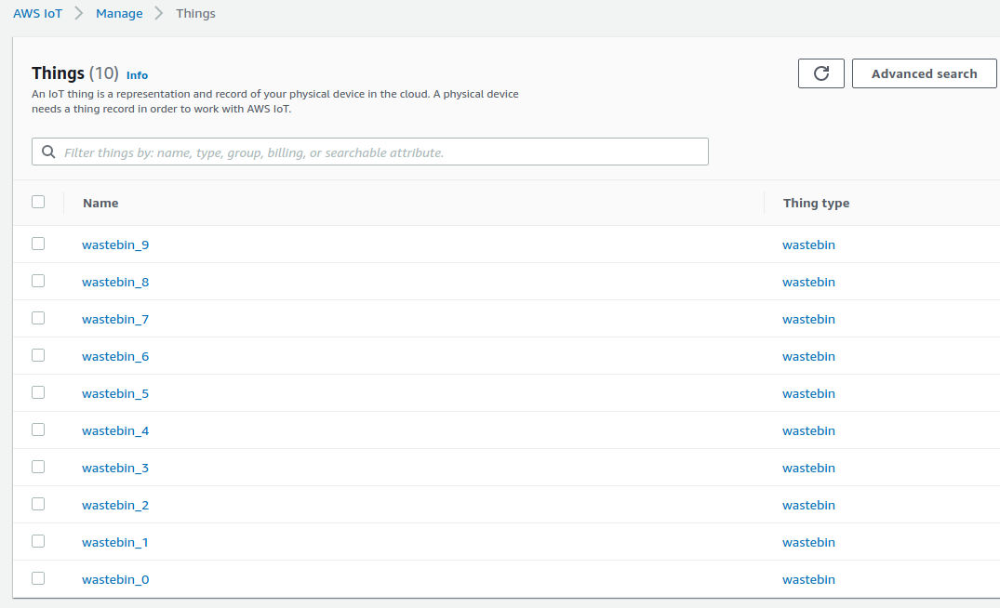
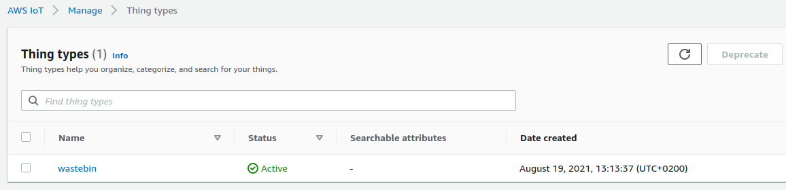

User Guide
Installation
The complete project can be found in this repository created by Yilmaz Naci Aslan. For installation please navigate to the github repository or simply download as zip.
Once the repository is downloaded follow the guidelines below for depending on your operating system
Ubuntu
cd YOUR_WORKING_DIRECTORY
source installation.sh
Windows
Not tested yet
Configuration
Once the installation is completed, some configurations are needed be done. All the configuration parameters are defined in the scrpts/config.py script. Configuration steps can be grouped into following sections
- AWS IAM Role
- Application Configuration
AWS IAM Configuration
The very first thing to configure is the user settings for accesing to AWS IoT Core using boto3. If you don't have AWS account please create one before proceeding the next steps.
Create an IAM user
It is good practice to create an AWS user for your account rather than using the root account.
- Create a user for your AWS account by enabling both Programmatic access and Console Acces.
- Save/download the credetion ID and and scret key
- Add the following policies to the user
- AWSIoTFullAccess
- AWSS3FullAccess
Save the AWS Access Key Id and Access Key into corrosponding .config file in the operating system.
aws_access_key_id = xxxxxxxx
aws_secret_access_key = xxxxxxxx
For more information about please see the more detailed explanation section.
Application Configuration (Optional)
Set Region
Under the application configuration, REGION of the AWS IoT Core Service being used is defined. Default value for te region is REGION = "us-east-1". If you want to run your applicatio in another region then simply change the Region constant in config.py to another location.
REGION = "us-east-1"
Set Certification option
When creating multiple things for to beu the recommand e each thing has a unique certification. This is important for cyber security aspect. However for experimenting purposes one can also use the same certification for multiple things. This behahoiver is determined with the set_unique flag in config.py. By keeping this flag true, a unique certificate will be generated for each thing. Defining this flag to False will generate only one certification in aws iot core, and this certificate will be used for authenticating the created things.
Default value of the flag is defined as True.
set_unique = True
Set a name for the thing type
Run
Once the installation and AWS IAM Configuration is completed, you can execute the main.py script. By using the default parameters in Application Configuration, the program will executes as below;
- Creates a
S3 Bucketto be used to store provisioning data file. - Creates
10 things, 10 certificates and a policyto test the mqtt connection. - Stores the created certificates and keys under
secure/keys and secure/certificatedirectories of the project folder. - Attaches created each certificate with a thing and a policy.
Results
Once the execution of the main.py finishes, following resources can be found on the AWS IoT Core Service of the selected Region.
Things

Thing types

Certificates

Policy